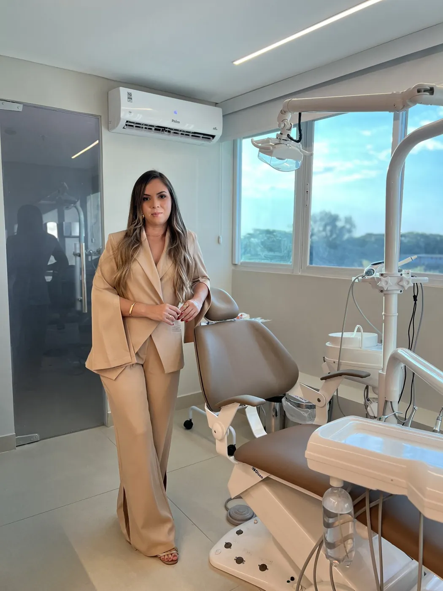
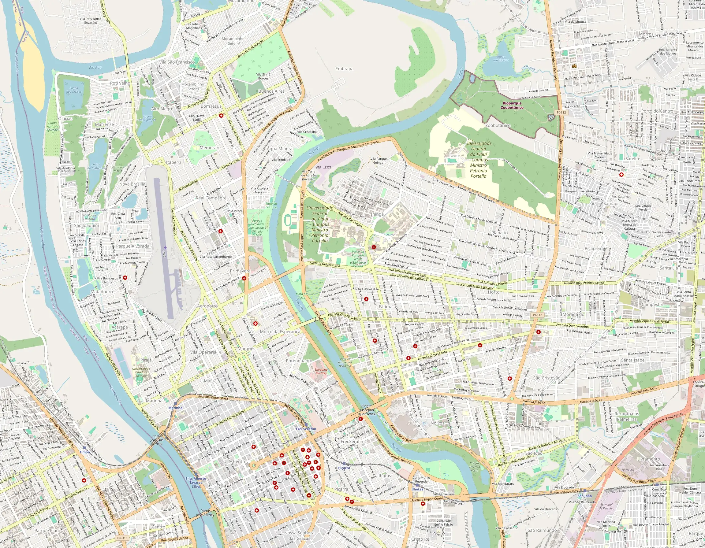
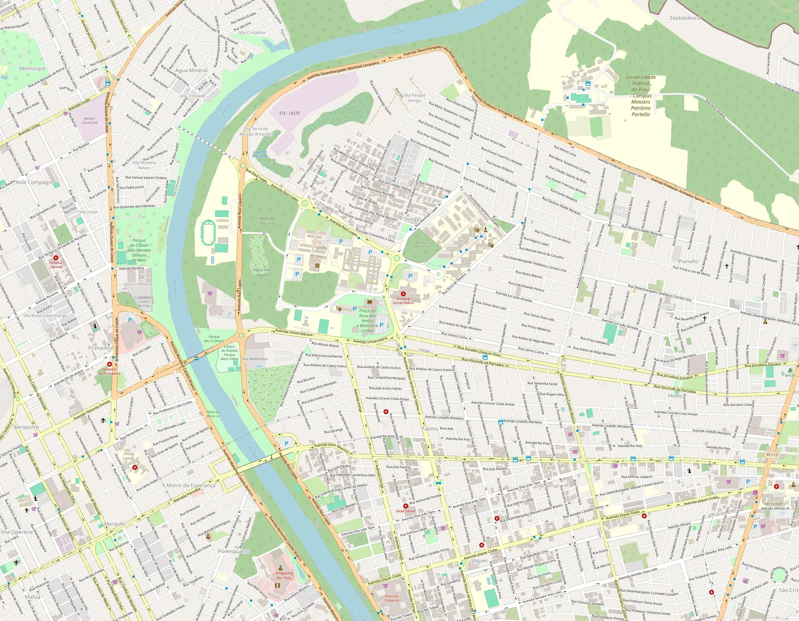
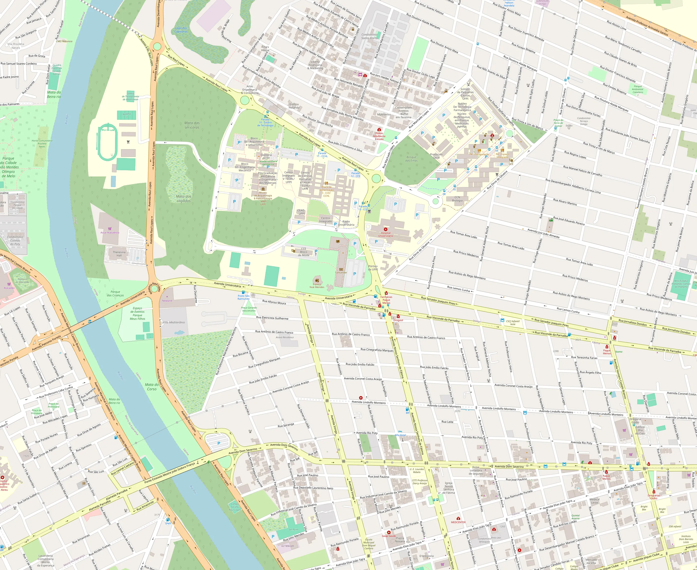
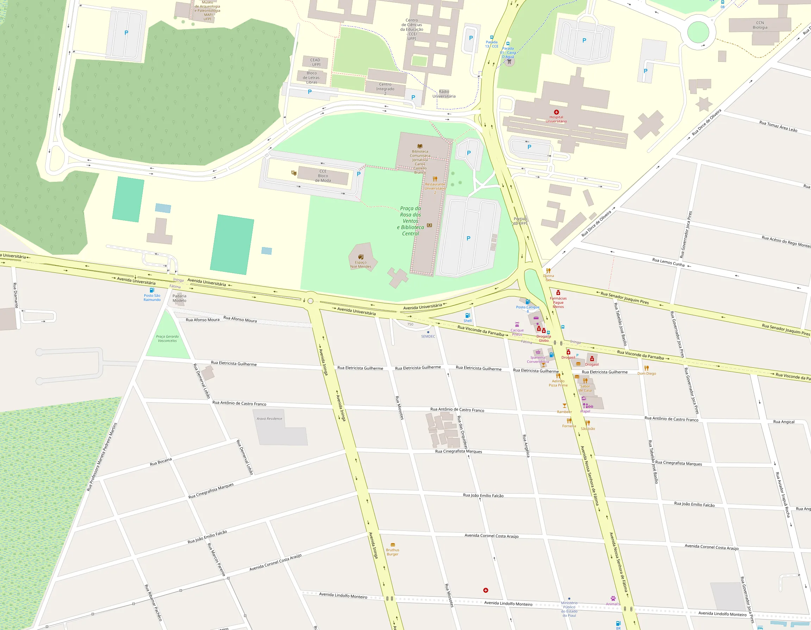

Cirurgia BucomaxilofacialCRO-PI 3295
Cirurgiã bucomaxilofacial em Teresina (PI)
Mordida que não encaixa ou queixo retraído? Comece pelo diagnóstico certo.
Avaliação em cirurgia ortognática com a Dra. Larissa Pires, cirurgiã bucomaxilofacial com 12 anos de experiência e residência hospitalar em São Paulo. Você entende o que está acontecendo com a sua face e a sua mordida, e quais são as opções antes de decidir.
- Mordida desalinhada ou que não fecha
- Dificuldade para mastigar ou respirar
- Dor ou estalos na ATM
- Siso incluso ou inflamado
Pelo WhatsApp você tira suas dúvidas antes de marcar · Atendimento na Integra Saúde

Mais de 8.000 horas de formação dentro de hospital
Centro cirúrgico, UTI e pronto-socorro
Experiência multidisciplinar
Ortognática, cirurgia estética facial, sisos e implantes
Precisão no diagnóstico
Planejamento cirúrgico virtual 3D, escaneamento intraoral, biomodelos e recursos tecnológicos avançados
Quando procurar
Situações que merecem uma avaliação cirúrgica
Cada caso é único. A indicação só acontece depois de avaliar você.
Posição da maxila e da mandíbula (cirurgia ortognática)
Quando os ossos da face não estão bem alinhados, a mordida, a mastigação e até a respiração podem ser afetadas, além da harmonia do rosto. Uma avaliação mostra se há indicação de corrigir essa posição para melhorar a função, a estética e a qualidade de vida.
Estética facial
Inclui a harmonização orofacial e a cirurgia estética facial, como a mentoplastia (cirurgia do queixo) e o contorno facial. Avaliamos o equilíbrio e as proporções da face para indicar o procedimento mais adequado a cada caso, desde opções menos invasivas até procedimentos cirúrgicos, com um planejamento que respeita as características de cada rosto.
Lipoaspiração cervicofacial
Procedimento que remove o excesso de gordura localizada no pescoço e abaixo do queixo, a conhecida "papada", com o objetivo de definir o contorno da mandíbula. Uma avaliação mostra se há indicação para o seu caso.
Dentes inclusos
Dentes que não nasceram por completo, como os sisos, precisam ser avaliados. Analisamos a posição, o espaço e a saúde da região para indicar o cuidado mais adequado para você.
Cistos e tumores na região da boca e dos maxilares
Muitas lesões nessa região não dão sinais no início e são descobertas em exames de rotina. O diagnóstico, com exames de imagem e, quando indicado, biópsia, define o tratamento de cada caso.
Articulação da mandíbula (ATM)
A disfunção temporomandibular (DTM) afeta essa articulação, localizada logo à frente do ouvido, e precisa de uma avaliação completa para definir o tratamento mais adequado.
Reabilitação oral
Avaliamos a ausência dentária e as condições ósseas da região para planejar a reabilitação mais adequada a cada caso, com foco na função mastigatória e na estética do sorriso.
Na Integra Saúde você também encontra atendimento em odontologia geral, para o cuidado de rotina da sua saúde bucal.
Quem conduz o seu cuidado
Muito prazer, sou a Larissa.
Há 12 anos me dedico à cirurgia da face. Para mim, cada caso combina função, harmonia e identidade.
- OdontologiaFACID, Faculdade Integral Diferencial, em Teresina.
- Residência3 anos em Cirurgia e Traumatologia Bucomaxilofacial no Hospital Municipal do Tatuapé, na rede pública de São Paulo, entre centro cirúrgico, UTI e pronto-socorro.
- EspecializaçãoImplantodontia pela Associação Paulista de Cirurgiões-Dentistas (APCD).
- HojeAtendimento em Teresina, na Integra Saúde.
Por isso, o cuidado começa na escuta atenta, passa por um planejamento detalhado e segue até a recuperação.
Conversar com a Dra. LarissaResidência no Hospital Municipal do Tatuapé (SP) · Especialista em Implantodontia (APCD) · CRO-PI 3295
Antes de agendar
Toque no que você sente
Marque os sinais que combinam com você. No final, a lista vai pronta para a equipe no WhatsApp.
Esta lista não é um diagnóstico. A indicação de cada tratamento acontece depois da avaliação.
Como é a avaliação
Uma decisão cirúrgica começa com informação e planejamento
Cada tratamento exige avaliação e indicação individualizada. É assim que a Dra. Larissa conduz cada caso.
Escuta atenta
A consulta começa pela sua história: o que você sente, há quanto tempo e o que espera do tratamento.
Exame e diagnóstico
Exame clínico e, quando indicado, exames de imagem e escaneamento intraoral para entender o seu caso.
Planejamento detalhado
Quando há indicação, o tratamento é planejado de forma individual, com recursos como o planejamento cirúrgico virtual 3D e biomodelos.
Acompanhamento até a recuperação
Você recebe as orientações de preparo e de pós-operatório e é acompanhado pela Dra. Larissa até a recuperação.
Dúvidas frequentes
Para quem é indicada a cirurgia ortognática?
Para quem tem alterações na posição da maxila e da mandíbula que afetam a mordida, a mastigação, a respiração ou a harmonia do rosto. O tratamento costuma ser planejado junto com o ortodontista, e a avaliação mostra se há indicação no seu caso.
Preciso tirar o siso mesmo sem dor?
Nem sempre. A indicação depende da posição do dente, do espaço disponível e da saúde da região. Na avaliação, com exame de imagem, a Dra. Larissa explica se há necessidade de extração.
Quem pode fazer implante dentário?
A indicação depende da saúde bucal e da quantidade e qualidade do osso na região. Em alguns casos, a região precisa de um preparo antes do implante. Tudo isso é definido no planejamento.
Qual a diferença entre harmonização orofacial e cirurgia estética facial?
A harmonização orofacial usa procedimentos menos invasivos. A cirurgia estética facial envolve técnicas cirúrgicas. A avaliação do equilíbrio e das proporções do rosto mostra qual caminho faz sentido para você.
Todo cisto na boca é grave?
Nem todo cisto é grave, mas toda lesão precisa ser investigada. Exames de imagem e, quando indicado, biópsia definem o diagnóstico e o tratamento.
Quem é encaminhado por um dentista pode agendar direto?
Sim. Fale pelo WhatsApp e, se tiver, leve o encaminhamento e os exames.
Atende convênio?
Não. O atendimento é particular.

A clínica
Um ambiente pensado para você
O atendimento acontece na Integra Saúde, em Teresina, onde também há atendimento em odontologia geral.
- AcolhimentoTempo para ouvir você e explicar cada etapa.
- ConfortoUm espaço tranquilo, do primeiro contato à recuperação.
- SegurançaProtocolos e planejamento em cada procedimento.
- PrivacidadeAtendimento individual e reservado.
Onde atendo
Em Teresina, no Bairro de Fátima




Integra Saúde
Av. Universitária, 750
Bairro de Fátima · Teresina (PI)
CEP 64049-494
WhatsApp (86) 99990-8713